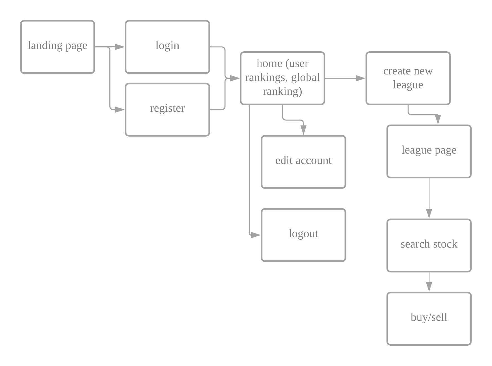
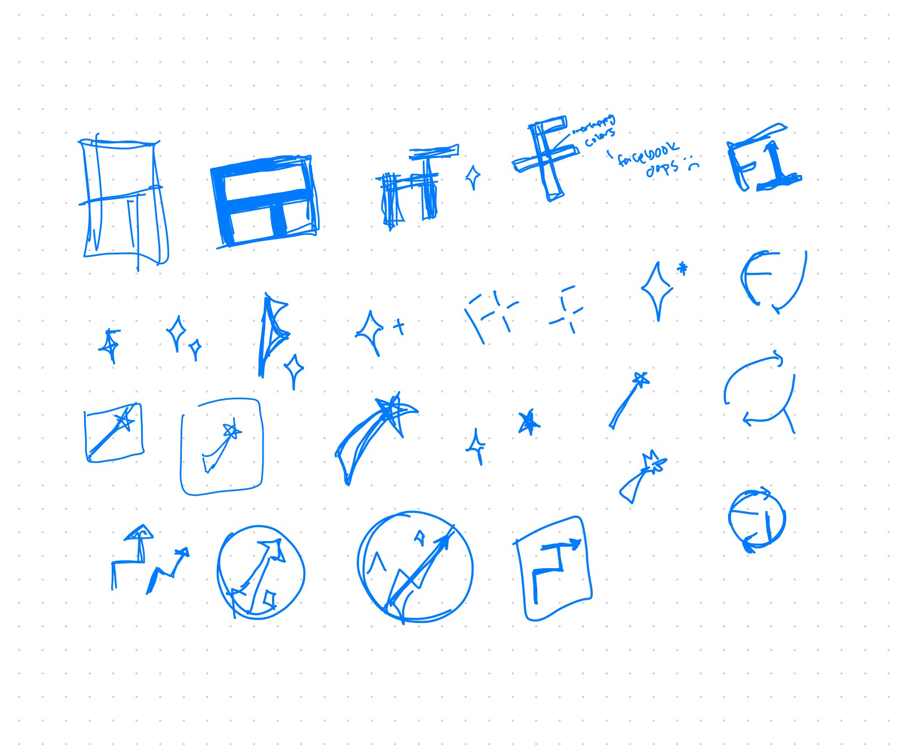

PRODUCT
Educational Game
Date
05/2020 - present
Role
Product Designer
Team
Roshni Barodia
Luis Gutierrez
Jisook Moon
Christopher Savan
Ryan Vasquez
Introduction
Hearing bits and pieces about investing in stocks from college peers, coworkers, and even random Uber drivers piqued my interest in the market months before I dove into trading. However, I realized that investing comes with risks like financial loss, and requires a decent foundational knowledge to begin.
Brainstorming
Our team met on Zoom to discus the minimum viable product and prioritized features for FantasyTrading. We established that users need to be able to interact with real time data (depending on how feasible the implementation would be), establish a portfolio by making (fake) transactions, interact with other players by inviting them into a private league, and also a local and global ranking system.
Notes from early meetings
Wireframe

Low Fidelity Mockup

Branding

I took a small break from designing the screens to work on a cohesive visual look. During this time, I made a logo and also put together a simple style guide to help me refine the overall look of the product. The logo features a shooting star to suggest a magic wand, as well as an upward trend and three bright colors in the star (purple, cyan, and deep blue) to make it more distinctive.
High Fidelity Mockup
After a lot of feedback with the developers on the functionality and its feasibility, I made a higher fidelity version for them to get a comprehensive view of what the site would look like. Pictured and linked below is the most recent draft.
Next Steps
While the back-end team continues to work on integrating the product components, I'm currently working on a third draft of the prototype in Adobe Xd, focusing on layout and proportional sizing of text and components and conducting usability tests for user feedback. Right now, we're aiming to launch FantasyTrading by the end of 2020.